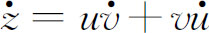

5．牛顿与莱布尼茨的工作的比较
微积分是能应用于许多类函数的一种新的普遍的方法，这一发现必须归功于牛顿和莱布尼茨两人。经过他们的工作，微积分不再是古希腊几何的附庸和延展，而是一门独立的科学，用来处理较前更为广泛的问题。
两人也都算术化了微积分，即在代数的概念上建立微积分。牛顿和莱布尼茨使用的代数记号和方法，不仅给他们提供了比几何更为有效的工具，而且还允许许多不同的几何和物理问题用同样方法处理。从17世纪开始到末尾，主要的变化就是微积分的代数化。这同韦达在方程理论、笛卡儿和费马在几何中所做的是可以比美的。
牛顿和莱布尼茨平分的第三个极端重要的贡献是把面积、体积及其他以前作为和来处理的问题归并到反微分。因此，四个主要问题——速率、切线、最大值和最小值、求和——全部归结为微分和反微分。
两个人的工作的主要差异是，牛顿把x和y的无穷小增量作为求流数或导数的手段。当增量越来越小的时候，流数（或导数）实际上就是增量的比的极限。而莱布尼茨却直接用x和y的无穷小增量（即微分）求出它们之间的关系。这个差别反映了牛顿的物理方向和莱布尼茨的哲学方向。在物理方向中，速度之类是中心概念，而哲学则着眼于物质的最终的微粒，这些微粒，莱布尼茨称作单子（monad）。从而牛顿完全是从考虑变化率出发来解决面积和体积问题的。对于他来说，求导数是基础，这个过程和它的逆解决了所有的微积分问题。事实上，用和来得到面积、体积或者重心，在他的著作中是少见的。相反，莱布尼茨首先着想的是和，当然这些和仍是用反微分计算的。
这两个人的工作的第三个差别在于牛顿自由地用级数表示函数，而莱布尼茨宁愿用有限的形式。在1676年给莱布尼茨的信中，牛顿强调用级数，甚至对于解简单的微分方程也如此。虽然莱布尼茨用了无穷级数，但他回答说，真正的目标是在确定的范围内获得结果，在代数函数不能起作用的地方，要用三角函数和对数函数。他向牛顿回忆詹姆斯·格雷戈里的断言，椭圆和双曲线的长度不能归结为圆函数和对数函数，他向牛顿挑战用级数来决定詹姆斯·格雷戈里是否正确。牛顿回答说，用级数他能决定一些积分是否能在有限项的范围内得到，但没有给出判别法。再者，在1712年给约翰·伯努利的信中，莱布尼茨反对把函数展成级数，他说微积分应着眼于把结果归结为求积（积分），而且如果必要的话，归结为含有超越函数的积分。
他们的工作方式也不相同。牛顿是经验的、具体的和谨慎的，而莱布尼茨是富于想象的、喜欢推广的而且是大胆的。莱布尼茨更关心的是用运算公式创造出广泛意义下的微积分，例如函数的积或商的微分法则，关于dn（uv）（u和v都是x的函数）的法则，以及积分表。正是他建立了微积分的规范，即法则和公式的系统。至于牛顿，即使他能容易地推广他的具体结果，他也没有费心去提出法则。他知道，如果z＝uv，那么

，但他并没有指出这个普遍的结论。虽然牛顿创立了许多方法，但他并没有加以强调。他的宏伟的微积分应用不仅证明了它的价值，而且远远超过莱布尼茨的工作，刺激并决定了几乎整个18世纪分析的方向。牛顿和莱布尼茨在对记号的关心方面也有差别。牛顿认为这事无关紧要，而莱布尼茨却花费了很多日子来选择富有提示性的记号。